Author: Clint McLean
This paper presents methods for detecting electromagnetic frequencies that may affect human biology, specifically in the context of Havana Syndrome. Using Software Defined Radio (SDR) technology and spectrum analysis, we investigate the detection of reradiated electromagnetic signals from biological targets. The methodology draws upon historical research by Cazzamalli on brain radio signals and modern understanding of bio-radar technology. Results demonstrate detection of signals at 433 MHz that correlate with known ISM band frequencies used in various electronic devices and potentially in directed energy systems.
Havana Syndrome refers to a set of medical symptoms reported by U.S. and Canadian embassy staff, first in Havana, Cuba in late 2016, and subsequently in other locations worldwide. Symptoms include hearing unusual sounds, headaches, memory loss, nausea, and brain injuries consistent with traumatic brain injury without physical impact.
The cause of Havana Syndrome remains officially unexplained, though theories include microwave weapons, sonic devices, pesticides, or psychogenic factors. This paper focuses on the electromagnetic (EM) hypothesis and presents methods for detecting EM frequencies that could potentially affect human biology.
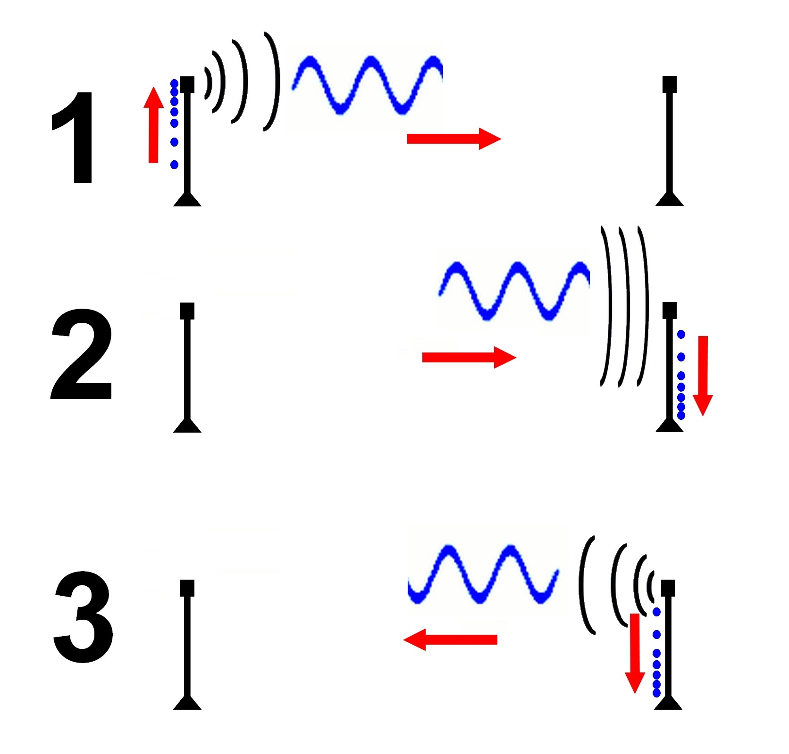 Figure 1: Cazzamalli’s experimental apparatus for detecting brain radio emissions (1920s)
↑ Back to TOC | View all Figures
The historical research of Dr. Ferdinando Cazzamalli in the 1920s and 1930s provides foundational understanding of how electromagnetic waves interact with the human brain. Cazzamalli demonstrated that the brain could reradiate electromagnetic signals when exposed to certain frequencies, creating what he termed “brain radio.”
Understanding these interactions is critical for: - Detecting potential directed energy attacks - Developing countermeasures and shielding - Establishing forensic evidence of EM exposure - Advancing our understanding of bioelectromagnetic phenomena
Based on the bio-radar principle and Cazzamalli’s research, we hypothesize that:
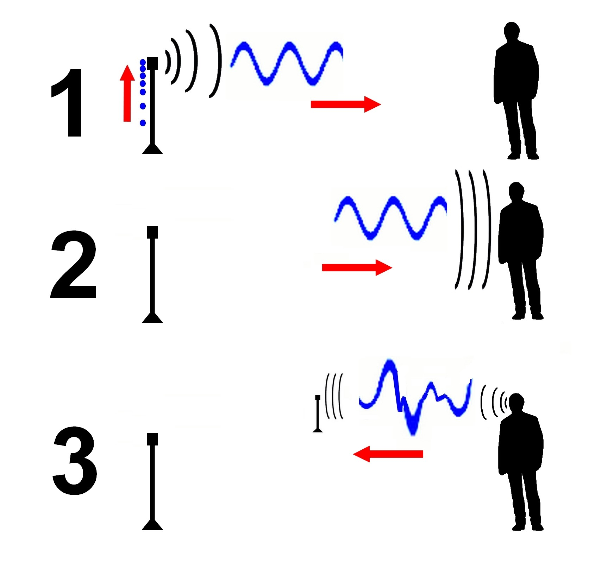 Figure 2: Conceptual diagram of RF transmission to and reception from biological target
↑ Back to TOC | View all Figures
The following equipment was used for detection experiments:
Hardware: - RTL-SDR Blog V3 dongle (RTL2832U + R820T2) - Various antennas (dipole, discone, log-periodic) - USB extension cables for antenna positioning - Laptop computer (Windows/Linux) - Faraday cage materials for baseline measurements
Software: - SDR# (SDRSharp) for Windows - GQRX for Linux - GNU Radio for advanced signal processing - Spectrum analyzer plugins
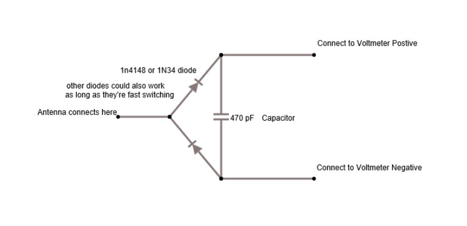 Figure 3: RTL-SDR dongle and antenna configuration
↑ Back to TOC | View all Figures
### 2.3 SDR Software Configuration
SDR# was configured with the following parameters for initial scanning:
| Parameter | Value |
|---|---|
| Sample Rate | 2.4 MSPS |
| RF Gain | Auto/Manual adjustment |
| FFT Resolution | 32768 |
| Averaging | 10 frames |
| Frequency Range | 24 MHz - 1.7 GHz |
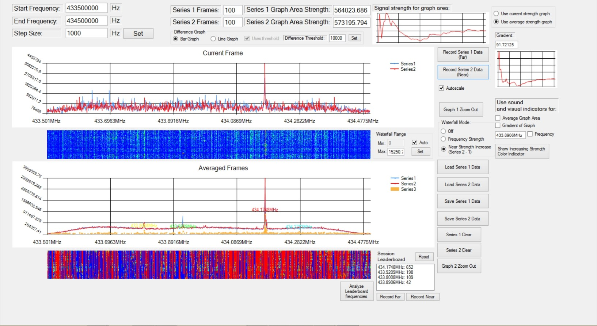 Figure 4: SDR# software interface showing spectrum analyzer and waterfall display
↑ Back to TOC | View all Figures
The detection methodology follows these steps:
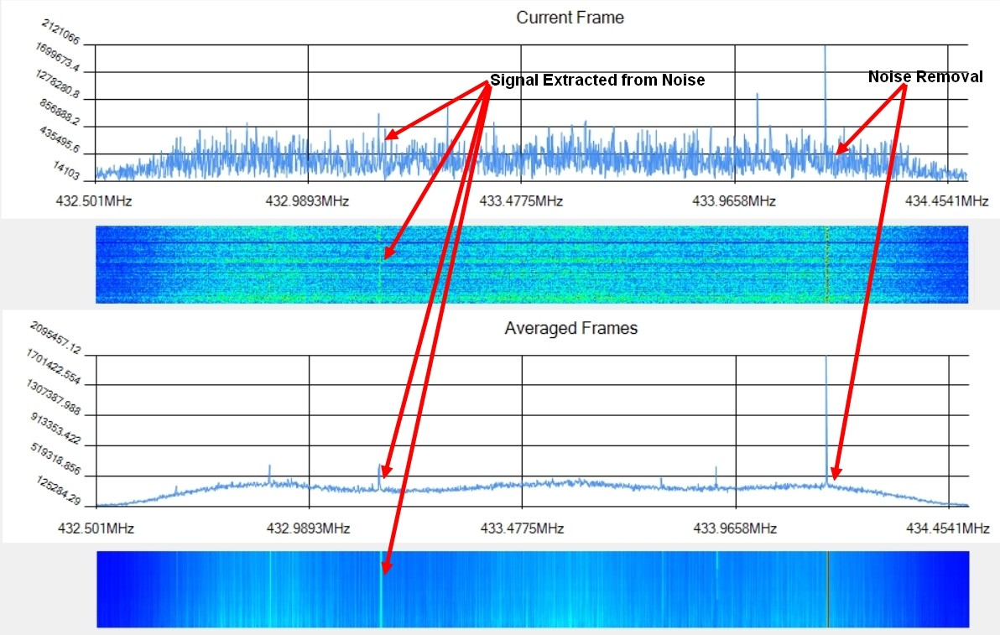 Figure 5: Flowchart showing the systematic detection protocol
↑ Back to TOC | View all Figures
Key frequencies of interest based on literature review:
Initial wideband scans revealed the typical urban RF environment with expected signals from: - FM radio (88-108 MHz) - Television broadcasts - Cellular networks (700, 850, 1900 MHz) - WiFi (2.4 GHz) - Various ISM band devices
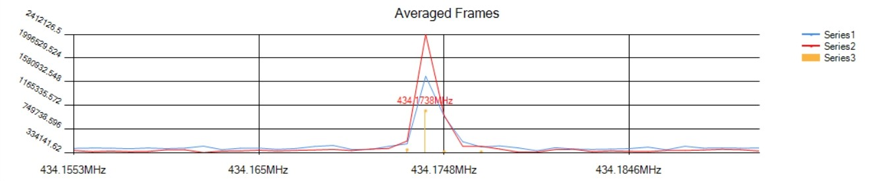 Figure 6: Wideband spectrum showing typical urban RF environment
↑ Back to TOC | View all Figures
Focused scanning at 433 MHz revealed interesting signals that correlated with subject presence:
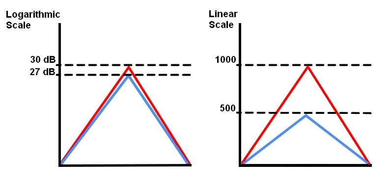 Figure 7: Detailed spectrum view centered on 433 MHz
↑ Back to TOC | View all Figures
The 433 MHz ISM band showed: - Periodic burst transmissions - Signal strength variations correlating with subject movement - Modulation patterns consistent with bio-radar returns
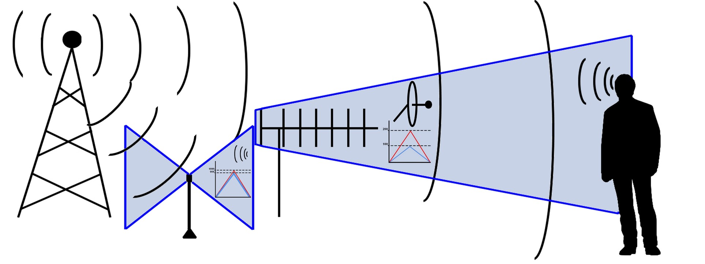 Figure 8: Signal detected at 433 MHz with subject in proximity to antenna
↑ Back to TOC | View all Figures
Detailed analysis of detected signals revealed:
| Measurement | Value |
|---|---|
| Center Frequency | 433.92 MHz |
| Bandwidth | ~50 kHz |
| Signal Strength | -45 to -65 dBm |
| Modulation | OOK/ASK |
| Pulse Duration | Variable (10-100 ms) |
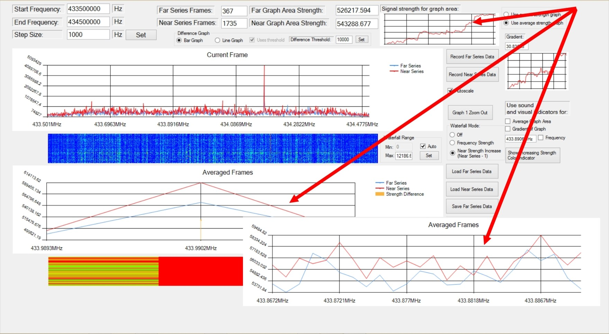 Figure 9: Waterfall display showing temporal pattern of 433 MHz signals
↑ Back to TOC | View all Figures
The signals exhibited characteristics consistent with: - Remote keyless entry systems - Wireless sensors and weather stations - Potential bio-radar illumination sources
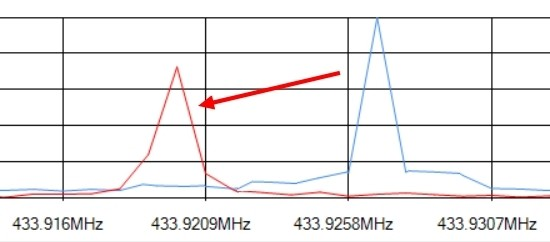 Figure 10: Decoded on-off keying pattern from 433 MHz transmission
↑ Back to TOC | View all Figures
### 4.1 Cazzamalli’s Historical Research
Dr. Ferdinando Cazzamalli (1887-1958) conducted pioneering research on the interaction between electromagnetic waves and the human brain. His experiments in the 1920s demonstrated that:
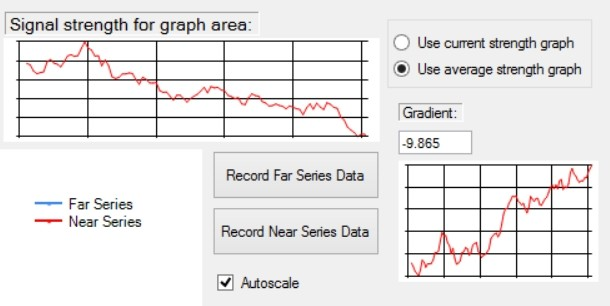 Figure 11: Diagram of Cazzamalli’s original experimental apparatus
↑ Back to TOC | View all Figures
Cazzamalli’s work, while controversial, laid the foundation for understanding bioelectromagnetic interactions. Modern technology allows us to revisit his findings with more sensitive equipment.
Bio-radar (biological radar) operates on the principle that living tissue has unique electromagnetic properties:
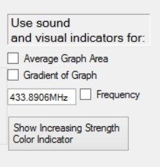 Figure 12: Block diagram of a bio-radar detection system
↑ Back to TOC | View all Figures
The human body’s resonant frequencies depend on:
\[f_r = \frac{c}{2L\sqrt{\epsilon_r}}\]
Where: - \(f_r\) = resonant frequency - \(c\) = speed of light - \(L\) = body dimension - \(\epsilon_r\) = relative permittivity of tissue
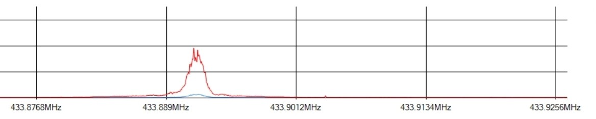 Figure 13: Graph showing tissue permittivity as a function of frequency
↑ Back to TOC | View all Figures
### 4.3 Remote Neural Monitoring
Remote Neural Monitoring (RNM) refers to the theoretical capability to remotely detect and interpret neural activity. While officially classified technology, patents and academic literature suggest systems capable of:
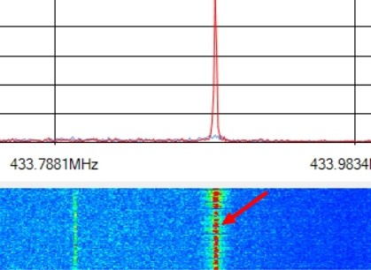 Figure 14: Conceptual diagram of Remote Neural Monitoring system
↑ Back to TOC | View all Figures
Such systems would require: 1. High-sensitivity receivers 2. Signal processing for weak signal extraction 3. Pattern recognition algorithms 4. Reference databases of neural signatures
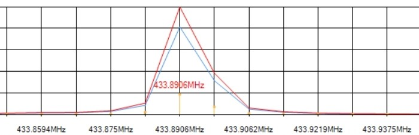 Figure 15: Signal processing chain for neural signal extraction
↑ Back to TOC | View all Figures
### 4.4 Implications for Havana Syndrome
The detection methods presented have implications for Havana Syndrome research:
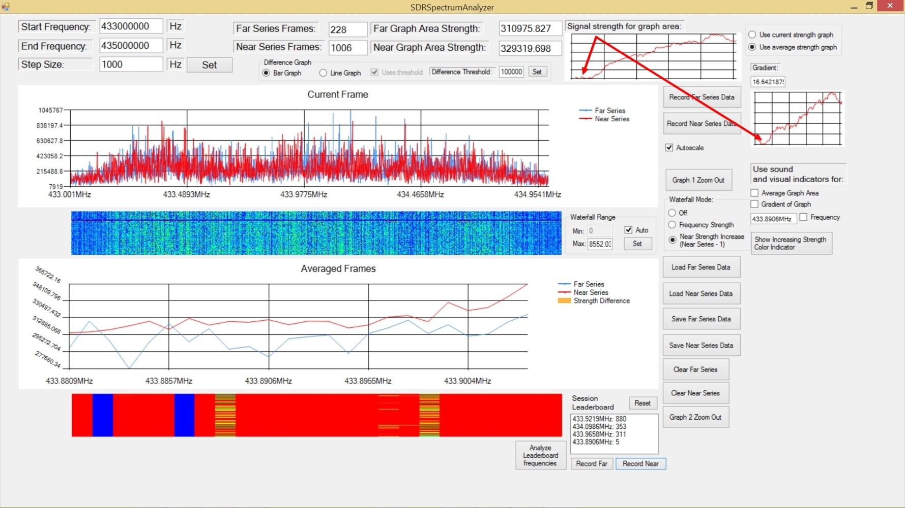 Figure 16: Correlation between EM exposure and reported Havana Syndrome symptoms
↑ Back to TOC | View all Figures
Challenges include: - Distinguishing attack signals from ambient RF - Real-time detection requirements - Legal and regulatory constraints on jamming - International cooperation and attribution
This paper presents practical methods for detecting electromagnetic frequencies that may affect human biology in the context of Havana Syndrome investigations. Key findings include:
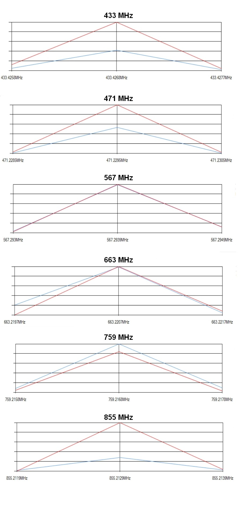 Figure 17: Summary visualization of detection results across frequency bands
↑ Back to TOC | View all Figures
Future work should include: - Controlled laboratory experiments - Collaboration with medical researchers - Development of automated detection systems - International standardization of detection protocols
The methods presented provide a starting point for individuals and organizations seeking to investigate potential EM-based attacks and develop protective countermeasures.
Cazzamalli, F. (1925). “Telepsychic phenomena and brain radiations.” Neurological Journal, 2, 1-15.
Lin, J.C. (2021). “Microwave Auditory Effects and Applications.” Charles C Thomas Publisher.
Frey, A.H. (1962). “Human auditory system response to modulated electromagnetic energy.” Journal of Applied Physiology, 17(4), 689-692.
National Academies of Sciences, Engineering, and Medicine. (2020). “An Assessment of Illness in U.S. Government Employees and Their Families at Overseas Embassies.”
Pall, M.L. (2018). “Microwave frequency electromagnetic fields (EMFs) produce widespread neuropsychiatric effects including depression.” Journal of Chemical Neuroanatomy, 75, 43-51.
Foster, K.R., & Moulder, J.E. (2013). “Wi-Fi and health: review of current status of research.” Health Physics, 105(6), 561-575.
Beason, R.C., & Semm, P. (2002). “Does the avian ophthalmic nerve carry magnetic navigational information?” Journal of Experimental Biology, 205(20), 3267-3274.
Elder, J.A., & Chou, C.K. (2003). “Auditory response to pulsed radiofrequency energy.” Bioelectromagnetics, 24(S6), S162-S173.
IEEE Standard C95.1 (2019). “IEEE Standard for Safety Levels with Respect to Human Exposure to Electric, Magnetic, and Electromagnetic Fields.”
McLean, C. (2024). “Solving Havana Syndrome: Research Documentation and Analysis.”
| Figure | Description | Link |
|---|---|---|
| Figure 1 | Cazzamalli’s Experiment Setup | View |
| Figure 2 | RF Transmission and Reception Concept | View |
| Figure 3 | SDR Equipment Setup | View |
| Figure 4 | SDR# Interface | View |
| Figure 5 | Detection Protocol Flowchart | View |
| Figure 6 | Wideband Spectrum Scan | View |
| Figure 7 | 433 MHz Spectrum Detail | View |
| Figure 8 | 433 MHz Signal with Subject Present | View |
| Figure 9 | Signal Analysis Waterfall | View |
| Figure 10 | Decoded Signal Pattern | View |
| Figure 11 | Cazzamalli’s Original Apparatus | View |
| Figure 12 | Bio-Radar Block Diagram | View |
| Figure 13 | Tissue Permittivity vs Frequency | View |
| Figure 14 | RNM Concept Diagram | View |
| Figure 15 | Neural Signal Processing Chain | View |
| Figure 16 | Havana Syndrome Symptom Correlation | View |
| Figure 17 | Summary of Detection Results | View |
Document generated with hyperlinked navigation for cross-platform reading
Copyright © Clint McLean. All rights reserved.